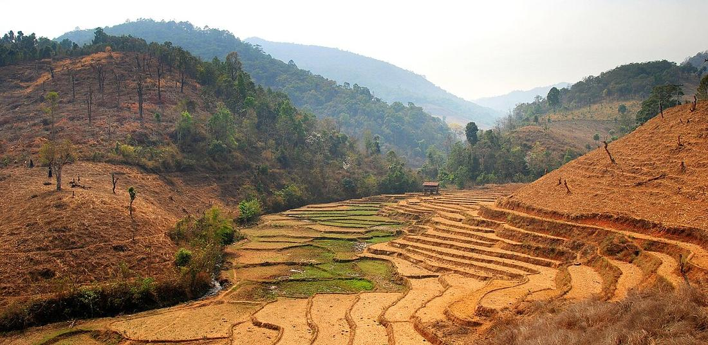
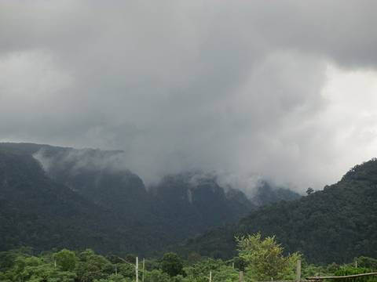

The rains, June to October
Drop the 1263, keep everything else, finish each day by mid-afternoon.
หน้าฝน
The cleanest air of the year, the greenest hills, and a wet road.

Takeaway · CC BY 3.0June to October. Afternoon rain most days rather than all-day rain, waterfalls running, rooms cheap, and PM2.5 at a tenth of its March figure.
The figure that should change how this season is thought about: Pai's July mean PM2.5 is 3.0 µg/m³, against 26.1 in March. Mae Sariang's is 2.3. These are among the cleanest air readings anywhere in the modelled record for this part of the world.
What you trade for it. Inference — wet sealed road is manageable and wet unsealed road is not the same proposition, which is why Route 1263 comes off most wet-season plans. Landslides and road repairs are a live possibility on the mountain sections. Afternoon rain is heavy and short, so a day planned to finish at two usually finishes dry.
The upside people underrate is the light: the haze that flattens everything in March is gone, and the ridgelines are visible for fifty kilometres between storms.

Drop the 1263, keep everything else, finish each day by mid-afternoon.
| Field | Tier | Source | Note |
|---|---|---|---|
| default | harvested | Open-Meteo Air Quality API (Copernicus CAMS) — Open-Meteo | |
| text.story | inference | the riding consequences are this project's; the air figures are measured | |
| text_th | inference | written in Thai by this project, not machine-translated |
cited Cited — a named source, linked · harvested Harvested — fetched from an open dataset, with its licence · tradition Tradition — general knowledge of the tradition, hedged · inference Inference — this project's own reasoning from the above · field Field — someone stood there